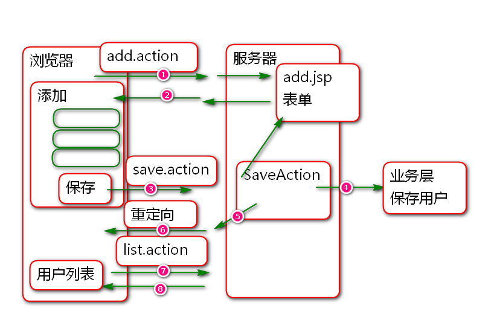
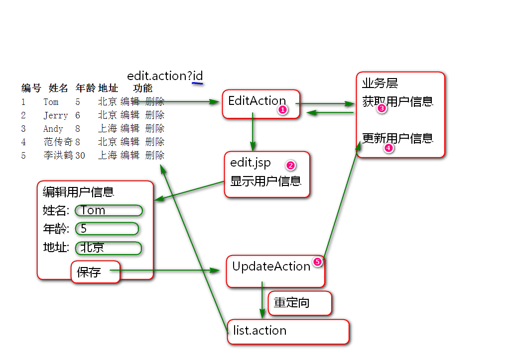
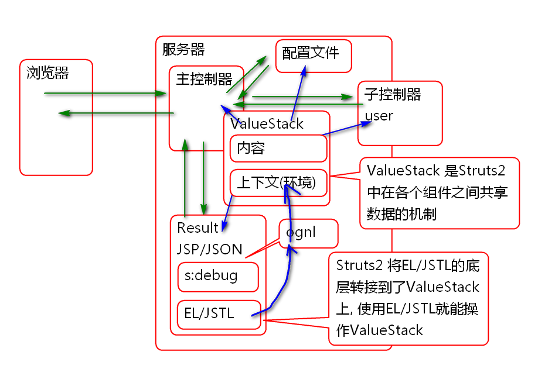

原理:

创建/WEB-INF/jsp/user/add.jsp
<%@ page contentType="text/html; charset=utf-8"
pageEncoding="UTF-8"%>
<%@ taglib prefix="c"
uri="http://java.sun.com/jsp/jstl/core" %>
<!DOCTYPE html>
<html>
<head>
<meta charset="UTF-8">
<title>添加用户</title>
</head>
<body>
<h1>添加用户</h1>
<c:import url="/WEB-INF/jsp/header.jsp"/>
<form action="save.action" method="post">
<div>
<label>姓名</label>
<input name="name" type="text">
</div>
<div>
<label>年龄</label>
<input name="age" type="text">
</div>
<div>
<label>地址</label>
<input name="address" type="text">
</div>
<div>
<input type="submit" value="保存">
</div>
</form>
</body>
</html>
抽取统一的导航菜单 /WEB-INF/jsp/header.jsp:
<%@ page contentType="text/html; charset=utf-8"
pageEncoding="UTF-8"%>
<div>
<a href="list.action">全部用户</a>
<a href="add.action">添加用户</a>
</div>
添加控制器配置 struts-user.xml
<!-- 显示添加界面 -->
<action name="add">
<result>
/WEB-INF/jsp/user/add.jsp
</result>
</action>
测试.
添加控制器方法 UserAction
private String name;
private Integer age;
private String address;
public String getName() {
return name;
}
public void setName(String name) {
this.name = name;
}
public Integer getAge() {
return age;
}
public void setAge(Integer age) {
this.age = age;
}
public String getAddress() {
return address;
}
public void setAddress(String address) {
this.address = address;
}
public String save(){
userService.save(name, age, address);
return "success";
}
6.添加业务层 方法 UserService
void save(String name, Integer age, String address);
实现业务层方法:
public void save(String name,
Integer age,
String address) {
if(name==null || name.trim().isEmpty()){
throw new EmptyNameException(
"用户名不能空");
}
if(age==null){
age = 0;
}
if(address == null){
address = "";
}
//Integer maxId = userDao.findMaxId();
//Integer id = maxId+1;
User user = new User(null, name, age, address);
userDao.save(user);
System.out.println(user);
}
重构 User.hbm.xml, 增加主键生成策略
<id type="int" name="id" column="t_id">
<!-- 主键ID的生成器 -->
<generator class="org.hibernate.id.IncrementGenerator"></generator>
</id>
配置控制器 struts-user.xml
<!-- 保存数据到数据库 -->
<action name="save" class="userAction"
method="save">
<result name="success"
type="redirectAction">
list
</result>
</action>
测试
Hibernate 提供了ID生成规则支持, 支持 Oracle 序列, MySQL自增ID等, 这些自增ID算法都由Hibernate提供的类封装, 只需要在映射文件中配置即可, 添加用户时候这些ID不用赋值, 保持为null, 保存时候Hibernate会利用算法将ID值计算出来并且回填到实体对象中!
案例:
更新数据表:
drop table t_user;
create table t_user(
t_id int not null auto_increment,
t_name varchar(100),
t_age int,
t_address varchar(200),
primary key(t_id)
)
更新映射文件:
<id type="int" name="id" column="t_id">
<!-- 主键ID的生成器 -->
<!-- <generator class="org.hibernate.id.IncrementGenerator"></generator>
-->
<generator class="org.hibernate.id.IdentityGenerator"></generator>
</id>
更新 添加用户业务方法:
public void save(String name,
Integer age,
String address) {
if(name==null || name.trim().isEmpty()){
throw new EmptyNameException(
"用户名不能空");
}
if(age==null){
age = 0;
}
if(address == null){
address = "";
}
//Integer maxId = userDao.findMaxId();
//Integer id = maxId+1;
User user = new User(null, name, age, address);
userDao.save(user);
System.out.println(user);
}
测试
原理:

实现:
添加控制器方法 UserAction
private User user;
public User getUser() {
return user;
}
public void setUser(User user) {
this.user = user;
}
public String edit(){
user = userService.get(id);
return "edit";
}
添加业务层方法 UserService
User get(Integer id);
实现业务层方法
@Transactional
public User get(Integer id) {
if(id==null){
throw new RuntimeException(
"ID不能空!");
}
return userDao.findById(id);
}
添加持久层方法 UserDao
public User findById(Integer id);
实现持久层方法
public User findById(Integer id) {
return hibernateTemplate.get(User.class, id);
}
添加编辑界面: edit.jsp
<%@ page contentType="text/html; charset=utf-8"
pageEncoding="UTF-8"%>
<%@ taglib prefix="c"
uri="http://java.sun.com/jsp/jstl/core" %>
<%@ taglib prefix="s" uri="/struts-tags" %>
<!DOCTYPE html>
<html>
<head>
<meta charset="UTF-8">
<title>编辑用户信息</title>
<!-- edit.jsp -->
</head>
<body>
<h1>编辑用户信息</h1>
<c:import url="/WEB-INF/jsp/header.jsp"/>
<form action="update.action" method="post">
<input type="hidden" name="user.id"
value="${user.id}">
<div>
<label>姓名</label>
<input name="user.name" type="text"
value="${user.name}">
<span>${nameError}</span>
</div>
<div>
<label>年龄</label>
<input name="user.age" type="text"
value="${user.age}">
</div>
<div>
<label>地址</label>
<input name="user.address" type="text"
value="<s:property value="user.address"/>">
</div>
<div>
<input type="submit" value="保存">
</div>
</form>
<s:debug></s:debug>
</body>
</html>
配置控制器
<!-- 打开编辑用户信息的界面 -->
<action name="edit"
class="userAction"
method="edit">
<result name="edit">
/WEB-INF/jsp/user/edit.jsp
</result>
</action>
测试
添加控制器 方法 UserAction
public String update(){
//id name age address
try{
//userService.update(
// id, name, age, address);
userService.update(user.getId(),
user.getName(), user.getAge(),
user.getAddress());
return "list";
}catch(EmptyNameException e){
e.printStackTrace();
request.put("nameError",
e.getMessage());
//user = new User(id, name, age, address);
return "edit";
}catch (Exception e) {
e.printStackTrace();
return "error";
}
}
添加业务层方法 UserService
void update(Integer id, String name, Integer age, String address);
实现业务层方法 UserServiceImpl
@Transactional
public void update(Integer id,
String name, Integer age,
String address) {
if(name==null||name.trim().isEmpty()){
throw new EmptyNameException(
"用户名不能空");
}
User user = userDao.findById(id);
user.setAddress(address);
user.getAge();
user.setName(name);
userDao.update(user);
}
配置控制器 struts-user.xml
<action name="update"
class="userAction"
method="update">
<result name="list"
type="redirectAction">
list
</result>
<result name="edit">
/WEB-INF/jsp/user/edit.jsp
</result>
</action>
测试.

Struts2 中共享数据的存储结构:
ValueStack分为两个区域
使用OGNL表达式可以读取 ValueStack 中的数据 1. 内容区域直接使用: user.address - 由上到下顺序读取数据, 同变量名的数据被覆盖了 2. 上下文区域: #session.loginUser 3. Struts2 底层将EL/JSTL转接到ValueStack上, EL/JSTL本身就可以读取ValueStack数据 - ${user.address} - ${loginUser} 或 ${sessionScope.loginUser}